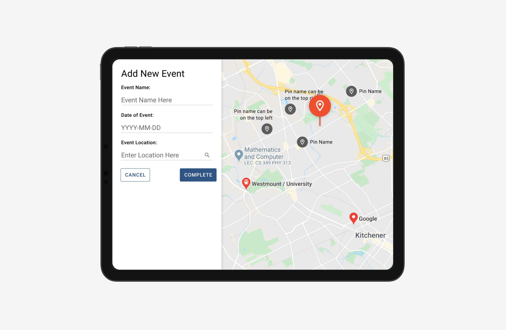

mass casualty patient triaging platform
Working on a platform for the Region of Waterloo Paramedic Services (ROWPS) to help triage and track patients during mass casualty events

Context
Since fall 2020, I’ve been volunteering my time on UW Blueprint, a club aiming to make technology accessible to community non-profits without the funding. Each term I’ve got to work on a project team with other students, and each project team works with a non-profit with a need to help build them a solution and equip them with the tools they need.
My first term on UW Blueprint in fall 2020, I was placed on a project that was building the Region of Waterloo Paramedic Services (ROWPS) a platform to better manage patient triage and track patients + event information in real time. It was essentially a structured system for knowledge management that would be able to be viewed, maintained, and updated by all relevant users.
Project Details
TEAM: 1 product designer (me!) + 1 product manager + 1 project lead + 8 developers
TIMEFRAME: Sept-Dec 2020
MY ROLE: Interaction & visual design, iterative design, product thinking